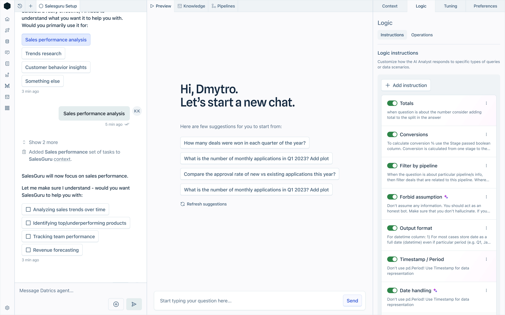

Datrics (YC W21) is a startup helping enterprise teams build and deploy custom AI agents through a visual interface.
I joined as Principal Product Designer to transform their highly technical system into a usable, scalable product.
Apr 2024 – Now

Playground instructions concept for Datrics AI platform
After delivering a successful proof-of-concept with a major client, I led the redesign of the entire platform: streamlining how teams configure agents, integrating testing workflows, and improving onboarding for new users.
I also built a design system that supported flexibility across enterprise accounts. Our work helped Datrics close multiple B2B2C deals and expand client pilots.
Data simulation and testing workflow interface